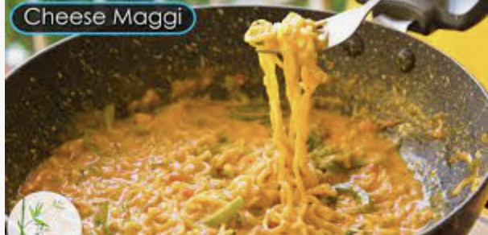

Cheese Maggi

The ultimate student comfort food. Just boil maggi noodles with taste-maker masala and dissolve some cheese in it.
Ingredients
- maggi noodles
- 2 taste-maker saches
- 2 cheese slices
- peas
- carrots
Steps
- Place some peas and carrots in rice-cooker
- Take one set of maggi noodles in a bowl of water and add 2 saches of taste-maker maggi masala to it
- Bring on high heat and add 2 slices of cheese to the mixture. Stir vigorously to dissolve the cheese
- When peas and carrots are cooked add it to the noodle mixture
- When noodles are nice and soft take off the stove and serve
- Enjoy :)